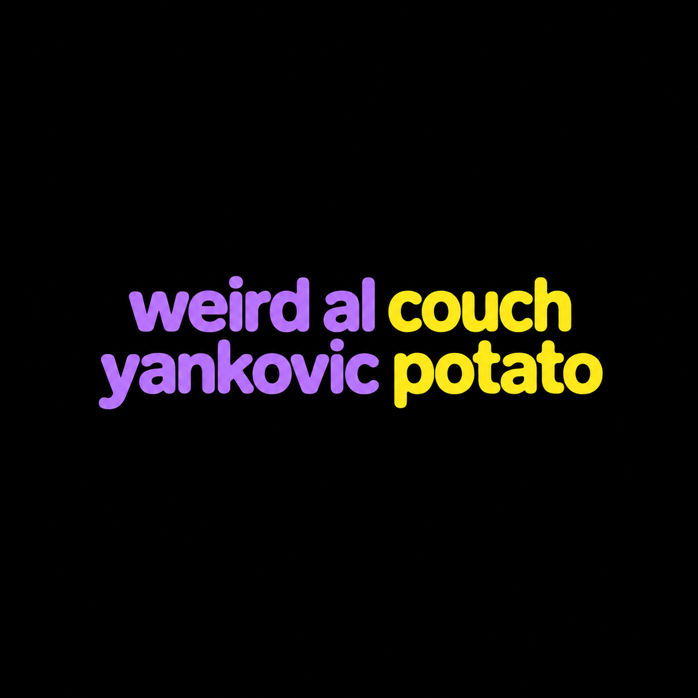

Imagem modificada com ajuda da inteligência artificial
“Couch Potato” é a primeira faixa de Poodle Hat, lançado em 2003, e é uma paródia de “Lose Yourself”, de Eminem, música que ficou famosa por fazer parte da trilha sonora do filme 8 Mile. Na versão de “Weird Al” Yankovic, o foco da música muda completamente: em vez de falar sobre oportunidades e determinação, o narrador descreve sua obsessão por assistir televisão, fazendo uma enorme quantidade de referências a programas, celebridades e canais de TV. A letra funciona quase como um catálogo da televisão norte-americana do início dos anos 2000, misturando programas de diferentes gêneros, reality shows, séries, desenhos e atrações de notícias.
Antes de gravar a música, Yankovic pesquisou bastante sobre televisão para garantir que as referências fossem precisas. Ele chegou a comentar que, quando escreve uma música sobre TV, passa bastante tempo assistindo televisão, lendo a TV Guide e pesquisando artigos sobre programas, podendo até passar o dia inteiro assistindo TV e considerar aquilo parte do seu trabalho de pesquisa. A música menciona programas como The Flintstones, The Osbournes, Da Ali G Show, 24, Law & Order, The Muppet Show, Survivor, SpongeBob SquarePants, MacGyver, The Sopranos e The Oprah Winfrey Show, entre muitos outros.
Além dos programas, a letra também cita diversas personalidades, como Simon Cowell, Anna Nicole Smith, Larry King, Richard Simmons, Lisa Kudrow, Jay Leno, Madonna, Luke Perry e Jennifer Lopez. Também aparecem referências a diversos canais e redes de televisão, incluindo C-SPAN, HBO, Discovery Channel, MTV, Disney Channel, History Channel, TLC, Fox e The Weather Channel. A enorme quantidade de nomes ajuda a criar a sensação de que o narrador praticamente vive em frente à televisão, pulando constantemente de um programa para outro.
Eminem autorizou Yankovic a gravar e lançar a paródia, mas não permitiu que fosse produzido um videoclipe para a música. Al respeitou a decisão e não fez o vídeo, algo que acabou complicando a escolha da gravadora sobre qual música deveria receber maior divulgação. Mesmo sem um videoclipe, “Couch Potato” se tornou uma das faixas mais conhecidas de Poodle Hat, transformando a ideia de uma pessoa viciada em televisão em uma grande paródia da cultura televisiva da época.
Talking: Look
If you had
One shot
To sit on your lazy butt
And watch all the TV you ever wanted
Until your brain turned to mush
Would you go for it
Or just let it slip?
Singing:
Yo
Remote is ready
Eyes wide, palms are sweaty
There’s Flintstones on the TV already
Wilma N’ Betty
No virgin to channel surfin'
And I’m HD ready
So I flip, garbage is all I’m getting
There’s Simon Cowell
Who folks wanna disembowel
He opens his mouth, always says something foul
They’re dying, Wow!
Wannabes are crying now
He votes them out
Time to throw in the towel
Shows based on reality
Oh the humanity!
Oh! Ozzy’s family!
Sho’ loves profanity!
Whoa! The insanity!
Oh! Dogs that crap and pee
Home of depravity?
No! They live happily
Yo! Plus “The Ali G Show”
And “Celebrity Mole”
Oh there’s Anna Nicole
She’s scaring me
“Look ma, no cavities!”
Oh! It’s a station break
Better go out to the kitchen and microwave something
“You’re gonna lose your mind watchin’ TV”
They told me, they’d scold me
But I still tune in every show (show)
My cable gets C-SPAN, TV Land and HBO
The Travel Channel, Discovery, and Lifetime (yo)
“You’re gonna lose your mind watchin’ TV”
They told me, cajoled me
“Turn off those music videos!” (no!)
I’m gonna watch C-SPAN, TV Land and HBO
The History Channel and QVC and Lifetime (yo)
“You’re Gonna…”
My butt is aching
As I watch NASCAR racing
That show about undertaking
Larry King to “24” to “Law and Order”
The Weather Channel’s boring like 60 Minutes
Ancient reporters next up on “E True Hollywood Story”
The rise and decline of twelve actors named Corey
Shows for next fall, they’ve already been naming
“CSI: Boise”, and “Touched By An Uncle”, both sound pretty lame, man
So does “Everybody Tolerates Raymond”
And “King of Queens” jumped the shark the first minute
I can’t believe Richard Simmons ain’t in it.
I’ll move right on to “8 Simple Rules for Dating My Teenaged Daughter”
Then I bet I’ll watch “The Bachelorette”
Followed by “Welcome Back, Kotter”
And “The Muppet Show” where they go “Mahna Mahna”
“You’re gonna lose your mind watching TV”
They told me, they’d scold me
But I still tune in every show (show)
My cable gets C-SPAN, TV Land and HBO
The Disney Channel, and A&E and Lifetime
“You’re gonna lose your mind watching TV”
They told me, cajoled me
But I still love Lisa Kudrow (drow)
I’m lookin’ at C-SPAN, TV Land and HBO
The Playboy Channel and Court TV and Lifetime (yo)
Never missed “Melrose Place” or “Lost in Space”
I’ve seen each “Amazing Race” and “Without a Trace”
But I only watched “Will and Grace” one time one day
Wished I hadn’t cause TiVo now thinks I’m gay
Oh, and “Fear Factor” I watched maybe a half hour
After that felt like I needed a long shower
Network execs with naked ambition
“Next week on FOX – watch lions eat Christians!”
Like to tie up those programming planners
Make’em watch all of that junk ’til their heads explode just like “Scanners”
Leech-covered grub-eating fools on “Survivor”
Look, there’s James Lipton discussing the oeuvre of Mr. Rob Schneider
And there’s Gilligan and SpongeBob, plus there’s MacGyver
And Jay Leno has got Madonna and hey, there’s Luke Perry
And a special all pig-latin episode of “Drew Carey”
Wanna turn on ET cause I’m a gossip freak
And I gotta know who J. Lo is marryin’ this week
A 30 second spot, then we come back to “Are You Hot?”
I was planning on recording “The Sopranos”. I forgot!
I love shows with or without a plot
I stare ’til my legs are numb, my eyes bloodshot
Because I only have got
one brain to rot
I’m gonna spend my life watching television a lot
“You’re gonna lose your mind watching TV”
They told me, they’d scold me
But I still tune into every show (show)
My cable’s gets C-SPAN, TV-Land, and HBO
The Sci-Fi Channel and AMC and Lifetime (yo!)
“You’re gonna lose your mind watching TV”
They told me, cajoled me,
“Turn off that Oprah Winfrey show!” (no!)
I got it on C-SPAN, TV Land and HBO
The Learning Channel and MTV and Lifetime (yo!)
You can watch anything you want to, man.